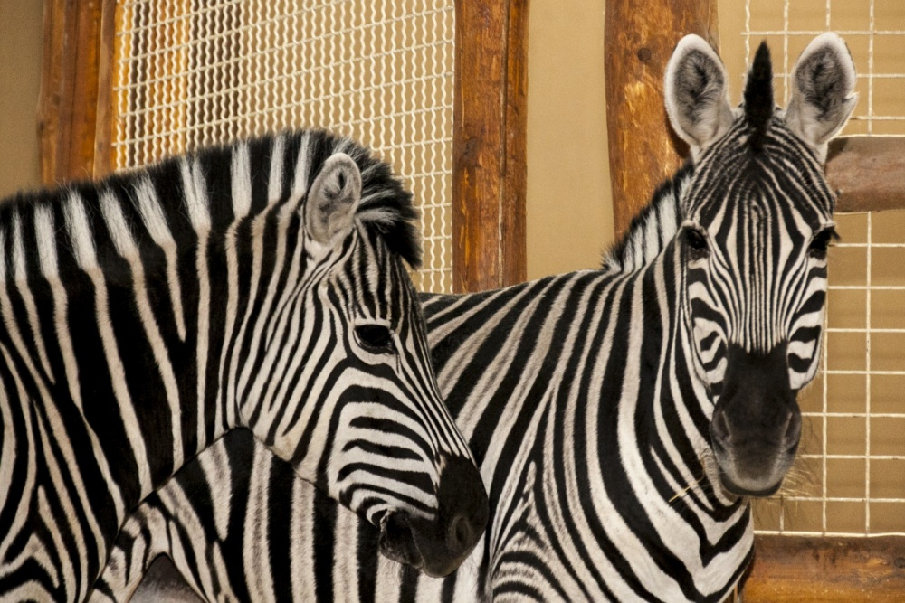

ЗЕБРА

Зебра – тварина класу ссавці, загону непарнокопиті, сімейства кінських, роду коні, підроду зебри (лат. Hippotigris).
Походження слова "зебра", найімовірніше, має африканське коріння, і запозичена колоністами у аборигенів, в діалекті яких є слово "zebra".
Опис зебри, будова, характеристика
Зебра – тварина, що має тіло середніх розмірів, що досягає більше 2 метрів в довжину. Вага зебри становить 300-350 кг. Хвіст у неї середньої довжини, зазвичай виростає до 50 см. Самець зебри крупніше самки, його висота в холці становить 1,4 – 1,5 метра. У цих тварин досить щільне і кремезне статура. Ноги зебри короткі, закінчуються міцними копитами.
Грива зебри коротка і жорстка. Центральний ряд ворсу проходить по спині характерною "щіточкою" від голови і аж до хвоста. Шия зебри мускулиста, у самців вона товща.
Бігають зебри не так швидко, як коні, але при необхідності можуть розвивати швидкість до 80 км / ч. У разі переслідування зебра використовує особливу тактику бігу зигзагами, що укупі з особливою витривалістю робить тварина недосяжною здобиччю для багатьох хижаків.
У зебри дуже слабкий зір, але відмінно розвинений нюх, що дозволяє тварині відчути потенційну небезпеку на значній відстані і вчасно попередити рідний табун.
Звуки, що видаються зебрами, вельми різноманітні. Вони бувають схожі на гавкіт собаки, іржання коня, крики осла і т.д. Все залежить від ситуації, в якій зебра кричить. При сприятливому збігу обставин тривалість життя зебри в диких умовах досягає 25-30 років, в неволі – до 40 років.
Смужки зебри. Чому зебра смугаста?
Багато хто задається питанням: «Якого кольору зебра? Біла або чорна ». До сих пір ведуться суперечки з приводу забарвлення зебри: тварина біле в чорну смужку чи навпаки. Вчені стверджують, що домінантним кольором є все-таки чорний. У будь-якому випадку смуги на шкірі зебри складають унікальний для кожної особини візерунок, також як не буває двох тигрів з однаковими смугами.
Смужки зебри на шиї і голові розташовані вертикально, тіло тварини розмальовано смугами під кутом, ноги прикрашають горизонтальні смужки. Цікава особливість – дитинчата зебри дізнаються свою матір як раз по унікальному узору смуг.
Смужки зебри є своєрідним захистом: тварина візуально зливається з розпеченим, тремтячим повітрям савани, дезорієнтувати хижаків. А також це маскування від гедзів і мух Цеце, що реагують тільки на поляризований колір і сприймають зебру як неїстівний предмет, який представляє собою мелькання чорно-білих смуг.
Останнє пояснення свідчить про те, що смужки зебри здійснюють терморегуляцію тіла тварини. Існує думка, що чорно-біле забарвлення зебри здатна охолоджувати тварина. Справа в тому, що області тіла по-різному нагріваються: білі слабкіше, чорні сильніше. Різниця в температурах викликає мікроциркуляцію повітряних потоків поруч з твариною, що допомагає зебрі жити під палючим сонцем.
НАЗАД ДО МЕНЮ
НАЗАД ДО БУРОГО ВЕДМЕДЯ
ПЕРЕЙТИ ДО ЖИРАФА